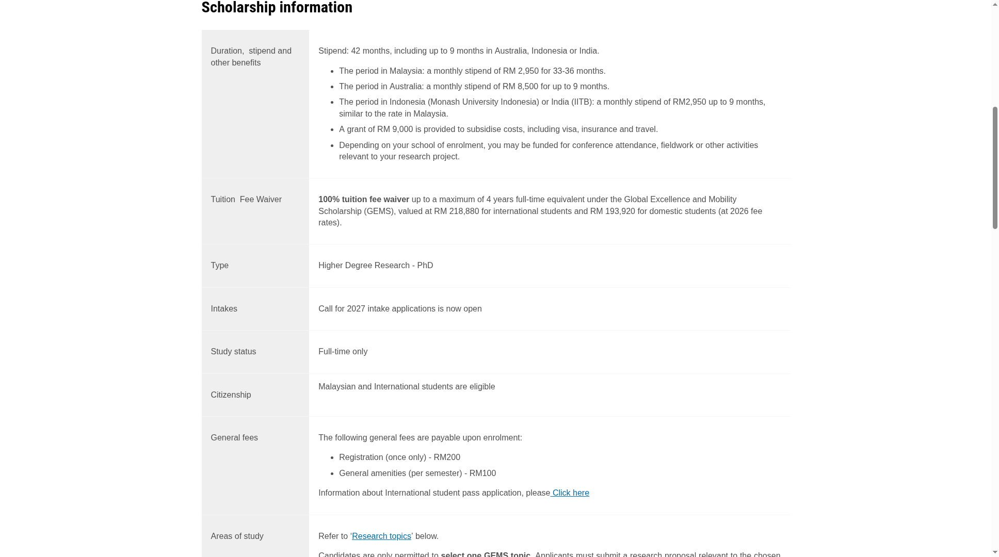
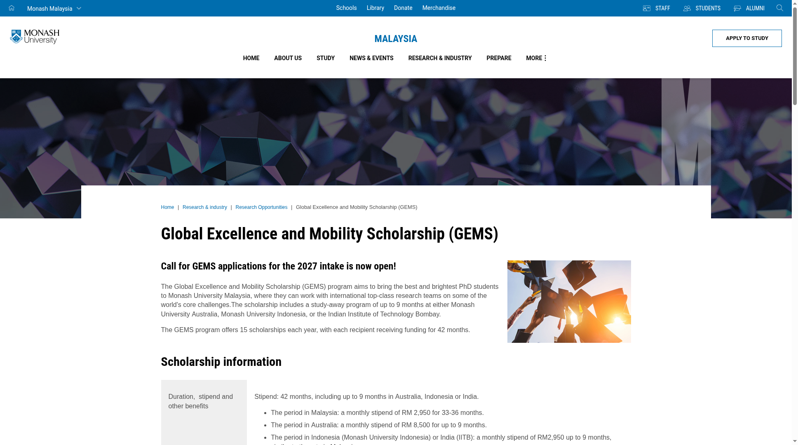
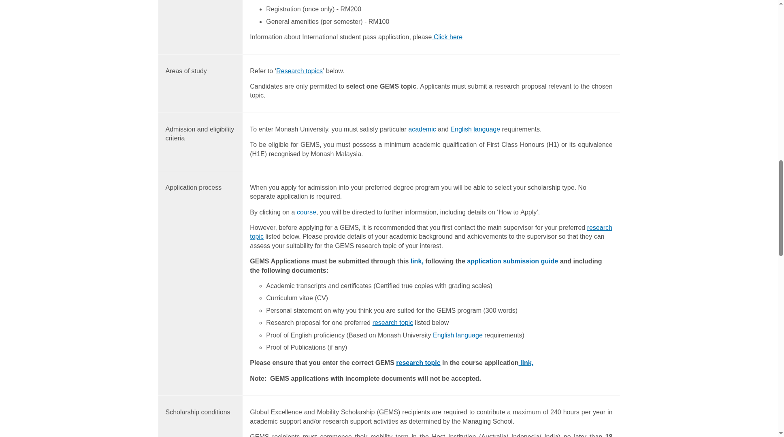
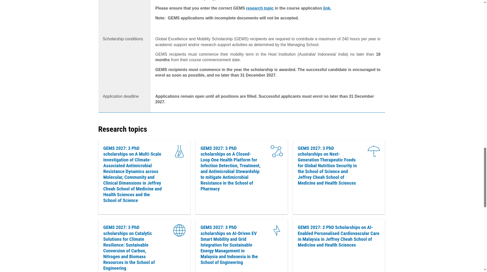

Monash GEMS: PhD tuition waiver, stipend and study abroad
The 2027 GEMS call at Monash University Malaysia is open to Malaysian and international applicants, including eligible Indians. Select one listed research topic and check supervisor fit before applying.
What does the scholarship cover?
- Tuition: 100% waiver for up to four full-time-equivalent years. The page values this at RM218,880 for international students at 2026 rates, not a cash payment.
- Stipend: 42 months in total. The published Malaysia rate is RM2,950 a month for 33–36 months. The Australia mobility rate is RM8,500 a month for up to nine months; Indonesia/IIT Bombay mobility is RM2,950 a month for up to nine months. These are location-specific portions, not extra overlapping payments.
- Other support: RM9,000 grant to subsidise visa, insurance and travel costs. Research-school funding for conferences or fieldwork may be available, not guaranteed.
The page's 42-month total and its location ranges do not define every individual's exact schedule. Ask the school to confirm your funded months and destination before accepting an offer.
Which costs remain?
Monash explicitly lists RM200 one-time registration and RM100 general amenities per semester payable on enrolment. The RM9,000 grant is a subsidy, not a promise that every visa, insurance or travel cost is covered. Other personal, student-pass or application costs were not fully checked. This is not a zero-cost-study claim.

Who is eligible?
This is a full-time PhD, not a taught masters scholarship. Applicants need First Class Honours (H1) or equivalence (H1E) recognised by Monash Malaysia, plus its academic and English requirements. Do not translate an Indian first-class degree or CGPA into H1E yourself. The university must assess equivalence. Eligible Indian applicants, including those from Kerala, can apply under international eligibility.
The linked research-English rules require complete, verifiable evidence with the admission/scholarship application. Requirements vary by faculty. For the listed engineering, medicine/health, pharmacy and science groups, the table gives IELTS Academic 6.5 overall with 6.0 in every component, or the appropriate accepted equivalent. Prior English-medium study may qualify under detailed conditions; it is not an automatic waiver for every Indian applicant. Check test type, validity and your chosen school.

What can you research?
The current topic list covers climate-linked antimicrobial resistance, infection detection/treatment and stewardship, therapeutic foods, catalytic conversion of carbon/nitrogen/biomass, EV mobility and energy management, and cardiovascular care. Some clusters use AI; this is a scholarship opportunity, not an AI-tool recommendation. You may choose one GEMS topic and must submit a relevant proposal.
Topic-specific criteria can be narrower than the overall call. For example, community/clinical projects may prioritise candidates with local access. International eligibility is not a promise that every project fits every applicant. Read the full topic and speak with its main supervisor. Alternative aligned proposals require supervisor agreement where the topic page says so.
How to apply, step by step
- Open the current call and a suitable topic. Use its Research topics section. Check the project, school, supervisor and any local-access or technical requirements.
- Contact the main supervisor first. Monash recommends sharing your academic background and achievements so the supervisor can assess your fit. Contact details are on the topic page. This is an applicant action; no email has been sent on anyone's behalf.
- Prepare the GEMS documents. Certified academic transcripts/certificates with grading scales; CV; a 300-word personal statement on suitability; research proposal for one topic; English-proficiency evidence; publication evidence if any. The general submission guide asks for certified translations of non-English records and a maximum two-page CV for its application-details section.
- Follow the call's application link to My.App. The live destination showed email/password login and Create a new account. New applicants should use their own personal email, activate the account, and follow any MFA request as the official guide describes. We did not create an account or sign in.
- Start your admission application and choose GEMS. Monash says scholarship selection is part of the degree application, not a separate scholarship form. Its guide goes through study location/type, privacy, personal details, faculty/unit/course, scholarship round, research/supervision, English evidence and qualifications. Choose the correct Malaysia course and exact GEMS topic, not an unrelated Australian central-scholarship round.
- Upload, review and submit. Follow the live portal's actual formats, file sizes and declarations, which were not inspected behind login. Incomplete GEMS applications are not accepted. Check the application summary and save the confirmation/reference after submitting.

Conditions you should not miss
Recipients must contribute up to 240 hours a year of school-assigned academic/research support. Mobility at a host in Australia, Indonesia or India must start no later than 18 months after course commencement. The successful candidate must start in the award year, no later than 31 December 2027 for this call.

Source differences and what remains untested
The current dedicated GEMS page controls this guide. Some third-party listings still show 25 January 2027; the current university page instead says until positions are filled. A separate general Monash student-aid page has a 2027 heading but still says December 2026 enrolment. We did not use that stale date.
The dedicated page says 15 scholarships annually, while its topic cards display five groups of three and one of two, totalling 17 listed topic slots. We have not treated those as 17 confirmed available awards. Ask the Graduate Research Office at mum.gro@monash.edu about current places and any discrepancy.
We read the current call and submission guidance and reached My.App login. No account was created, no applicant data entered, no supervisor contacted and no application submitted. Authenticated GEMS options, uploads and final confirmation were not tested.
English and Malayalam application videos
No reliable current full GEMS 2027 application walkthrough in English or Malayalam was verified in the searches checked. Use the official written submission guide and your supervisor/school for case-specific questions.
Official sources
Monash GEMS: PhD ഫീസ് ഇളവും സ്റ്റൈപ്പൻഡും വിദേശപഠന അവസരവും
Monash University Malaysiaയുടെ 2027 GEMS call തുറന്നിട്ടുണ്ട്. യോഗ്യരായ ഇന്ത്യൻ അപേക്ഷകർ ഉൾപ്പെടെ international applicantsന് അപേക്ഷിക്കാം. പട്ടികയിലെ ഒരു research topic തിരഞ്ഞെടുത്ത് supervisor fit പരിശോധിക്കണം.
എന്താണ് സഹായം?
- ട്യൂഷൻ: പരമാവധി നാല് full-time-equivalent വർഷം 100% waiver. International studentsന് 2026 നിരക്കിൽ RM218,880 മൂല്യം എന്നാണ് പേജ്; കൈയിൽ കിട്ടുന്ന പണമല്ല.
- സ്റ്റൈപ്പൻഡ്: ആകെ 42 മാസം. മലേഷ്യയിൽ 33–36 മാസം RM2,950 പ്രതിമാസം. Australia mobilityയിൽ ഒമ്പത് മാസം വരെ RM8,500; Indonesia/IIT Bombayയിൽ ഒമ്പത് മാസം വരെ RM2,950. ഇവ സ്ഥലത്തിനനുസരിച്ചുള്ള ഘട്ടങ്ങളാണ്; ഒരേസമയം കൂട്ടിക്കിട്ടുന്ന തുകയല്ല.
- മറ്റു സഹായം: Visa, insurance, travel ചെലവുകൾക്ക് subsidy ആയി RM9,000 grant. Conference/fieldworkന് school അടിസ്ഥാനത്തിൽ സഹായം ലഭിക്കാം; ഉറപ്പല്ല.
ആകെ 42 മാസവും location rangesഉം ഓരോ വിദ്യാർത്ഥിയുടെയും കൃത്യമായ schedule നിർണയിക്കുന്നില്ല. Offer സ്വീകരിക്കുന്നതിന് മുമ്പ് funded monthsഉം destinationഉം schoolനോട് സ്ഥിരീകരിക്കുക.
ബാക്കിയുള്ള ചെലവുകൾ
Enrolment സമയത്ത് ഒരിക്കൽ RM200 registration, ഓരോ semesterനും RM100 amenities fee എന്നാണ് Monash പറയുന്നത്. RM9,000 മുഴുവൻ visa/insurance/travel ചെലവും തീർക്കുമെന്ന് ഉറപ്പല്ല. മറ്റു personal/student-pass/application ചെലവുകൾ എല്ലാം പരിശോധിച്ചിട്ടില്ല. പൂർണ്ണമായി ചെലവില്ലാത്ത പഠനം എന്ന അവകാശവാദമില്ല.
ആർക്കാണ് യോഗ്യത?
Full-time PhD അവസരമാണ്; taught masters അല്ല. Monash Malaysia അംഗീകരിക്കുന്ന First Class Honours (H1) അല്ലെങ്കിൽ H1E equivalence, academic/English requirements എന്നിവ വേണം. ഇന്ത്യൻ first-class/CGPA സ്വയം H1E ആയി കണക്കാക്കരുത്. Universityയാണ് equivalence നിർണയിക്കേണ്ടത്. ദേശീയതയുടെ അടിസ്ഥാനത്തിൽ യോഗ്യരായ കേരള അപേക്ഷകരും international പരിധിയിൽ വരും.
Research-English നിയമം admission/scholarship അപേക്ഷയ്ക്കൊപ്പം പരിശോധിക്കാവുന്ന തെളിവ് ആവശ്യപ്പെടുന്നു. Faculty അനുസരിച്ച് നിബന്ധന മാറും. Engineering, medicine/health, pharmacy, science ഗ്രൂപ്പുകൾക്ക് IELTS Academic overall6.5, ഓരോ componentലും6.0, അല്ലെങ്കിൽ അംഗീകരിച്ച equivalent എന്നാണ് പട്ടിക. മുൻ English-medium പഠനത്തിന് വിശദമായ നിബന്ധനകളോടെ പരിഗണനയുണ്ടാകാം; എല്ലാ ഇന്ത്യൻ അപേക്ഷകർക്കും automatic waiver അല്ല. Test type, validity, school നിയമം പരിശോധിക്കുക.
ഏത് ഗവേഷണ മേഖലകൾ?
Climate-linked antimicrobial resistance, infection detection/treatment/stewardship, therapeutic foods, carbon/nitrogen/biomass catalytic conversion, EV mobility/energy management, cardiovascular care എന്നിവയാണ് ഇപ്പോഴത്തെ clusters. ചിലത് AI ഉപയോഗിക്കുന്നു; ഇത് scholarship അവസരമാണ്, AI tool post അല്ല. ഒരു GEMS topic മാത്രം തിരഞ്ഞെടുക്കാം; അതുമായി ബന്ധപ്പെട്ട proposal വേണം.
ഓരോ projectനും കൂടുതൽ നിബന്ധന ഉണ്ടാകാം. Community/clinical projectൽ local access ഉള്ളവർക്ക് മുൻഗണനയുണ്ടാകാം. International eligibility എന്നതുകൊണ്ട് എല്ലാ projectഉം എല്ലാവർക്കും ചേരുമെന്ന് അർത്ഥമില്ല. Topic പൂർണ്ണമായി വായിച്ച് main supervisorനോട് സംസാരിക്കുക. മറ്റൊരു aligned proposal അനുവദിക്കുന്നിടത്ത് supervisor agreement വേണം.
അപേക്ഷിക്കേണ്ട ഘട്ടങ്ങൾ
- Current callൽ നിന്ന് topic തുറക്കുക. Research topics ഭാഗത്ത് project, school, supervisor, local-access/technical requirements പരിശോധിക്കുക.
- ആദ്യം main supervisorനെ ബന്ധപ്പെടുക. Academic backgroundഉം achievementsഉം അറിയിച്ച് fit പരിശോധിക്കാൻ Monash നിർദേശിക്കുന്നു. Contact topic പേജിലുണ്ട്. ആരുടെയും പേരിൽ ഇവിടെ email അയച്ചിട്ടില്ല.
- GEMS രേഖകൾ തയ്യാറാക്കുക. Grading scale സഹിതം certified transcripts/certificates, CV, suitabilityയെക്കുറിച്ച്300-word personal statement, ഒരു topicന്റെ research proposal, English evidence, publications ഉണ്ടെങ്കിൽ തെളിവ്. English അല്ലാത്ത രേഖകൾക്ക് certified translation; general guideന്റെ application-details ഭാഗത്ത് maximum2-page CV പറയുന്നു.
- Callലെ link വഴി My.App തുറക്കുക. പരിശോധനയിൽ email/password loginഉം Create a new accountഉം ഉണ്ടായിരുന്നു. പുതിയവർ സ്വന്തം personal email ഉപയോഗിച്ച് activate ചെയ്ത് official guideപ്രകാരമുള്ള MFA പൂർത്തിയാക്കണം. ഇവിടെ account ഉണ്ടാക്കിയിട്ടില്ല, login ചെയ്തിട്ടില്ല.
- Admission അപേക്ഷയിൽ GEMS തിരഞ്ഞെടുക്കുക. വേറെ scholarship application ആവശ്യമില്ലെന്നാണ് Monash. Study location/type, privacy, personal details, faculty/unit/course, scholarship round, research/supervision, English, qualifications ഘട്ടങ്ങൾ guideൽ ഉണ്ട്. ശരിയായ Malaysia courseഉം exact GEMS topicഉം തിരഞ്ഞെടുക്കണം; ബന്ധമില്ലാത്ത Australian central round അല്ല.
- Uploads, review, submit. Loginന് ശേഷമുള്ള format/size/declarations പരിശോധിച്ചിട്ടില്ല. യഥാർത്ഥ portal പിന്തുടരുക. അപൂർണ്ണ GEMS അപേക്ഷ സ്വീകരിക്കില്ല. Summary പരിശോധിച്ച് അയച്ചശേഷം confirmation/reference സൂക്ഷിക്കുക.
ശ്രദ്ധിക്കേണ്ട നിബന്ധനകൾ
School നിർദേശിക്കുന്ന academic/research supportന് വർഷം240 മണിക്കൂർ വരെ നൽകണം. Course തുടങ്ങിയിട്ട്18 മാസത്തിനകം Australia/Indonesia/India hostൽ mobility തുടങ്ങണം. Award ലഭിക്കുന്ന വർഷം പഠനം ആരംഭിക്കണം; ഈ callൽ പരമാവധി2027 ഡിസംബർ31.
ഉറവിടങ്ങളിലെ വ്യത്യാസവും പരിശോധനയുടെ പരിധിയും
ഈ guide നിലവിലെ dedicated GEMS പേജാണ് പിന്തുടരുന്നത്. ചില മൂന്നാംകക്ഷി listingൽ25January2027 പറയുന്നുണ്ടെങ്കിലും university ഇപ്പോൾ positions filled ആകുംവരെ എന്നാണ്. General student-aid പേജിൽ2027 headingനൊപ്പം പഴയ December2026 enrolment ഉണ്ട്; ആ പഴയ തീയതി ഉപയോഗിച്ചിട്ടില്ല.
Dedicated പേജ് വർഷം15 scholarship പറയുന്നു. Topic cardsൽ അഞ്ച് ഗ്രൂപ്പിൽ മൂന്ന് വീതവും മറ്റൊന്നിൽ രണ്ടും, ആകെ17 slots കാണിക്കുന്നു. അത്17 ഉറപ്പായ available awards ആയി അവതരിപ്പിച്ചിട്ടില്ല. നിലവിലെ ഒഴിവും വ്യത്യാസവും mum.gro@monash.edu വഴി Graduate Research Officeനോട് ചോദിക്കുക.
Call, written guide, My.App login എന്നിവ പരിശോധിച്ചു. Account, applicant data entry, supervisor outreach, submission ഒന്നും നടത്തിയിട്ടില്ല. Loginന് ശേഷമുള്ള GEMS options/uploads/confirmation പരീക്ഷിച്ചിട്ടില്ല.
English/Malayalam വീഡിയോ
നിലവിലെ GEMS2027 അപേക്ഷ മുഴുവനായി കാണിക്കുന്ന വിശ്വസനീയമായ English/Malayalam YouTube വീഡിയോ പരിശോധിച്ച തിരച്ചിലിൽ സ്ഥിരീകരിച്ചിട്ടില്ല. Official written guideഉം supervisor/schoolഉം ഉപയോഗിക്കുക.